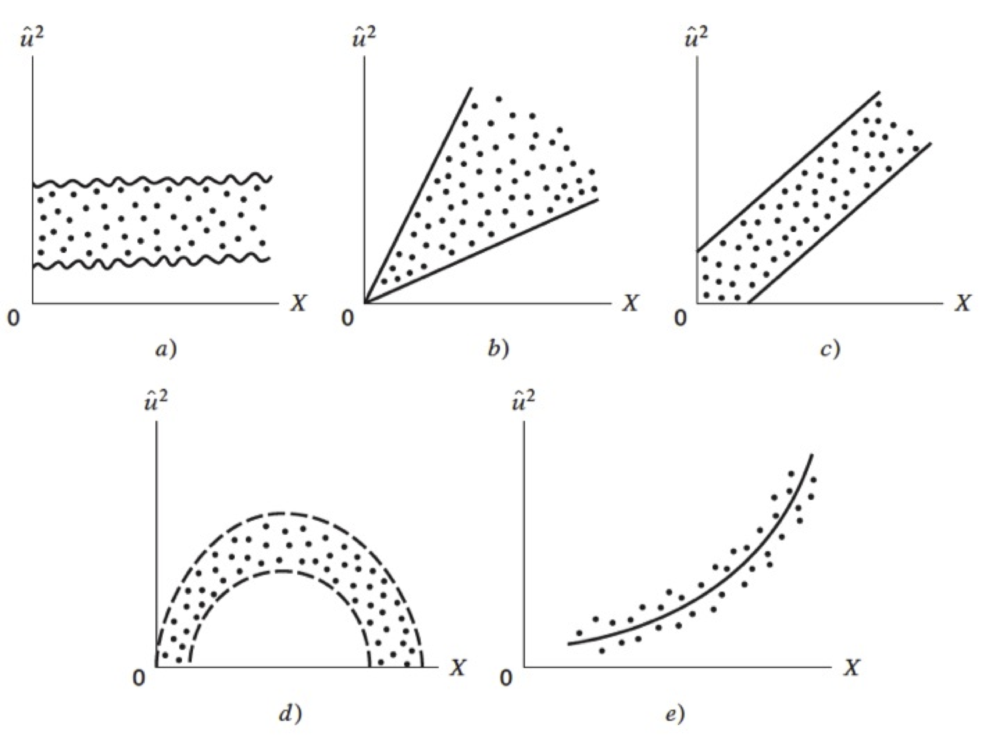

6. Regresión lineal#
Abordemos las primeras ideas de regresión lineal a través de un ejemplo práctico:
Creamos dos variables, Ingreso y Consumo Esperado
import pandas as pd
import numpy as np
import matplotlib.pyplot as plt
import random
import statsmodels.formula.api as stm
from statsmodels.graphics.regressionplots import abline_plot
df = pd.DataFrame({
'Col1': [1,2,3],
'Col2': [4,5,6]
})
familia = pd.DataFrame({'Y':[55,60,65,70,75,
65,70,74,80,85,88,
79,84,90,94,98,
80,93,95,103,108,113,115,
102,107,110,116,118,125,
110,115,120,130,135,140,
120,136,140,144,145,
135,137,140,152,157,160,162,
137,145,155,165,175,189,
150,152,175,178,180,185,191
],'X':[80,80,80,80,80,
100,100,100,100,100,100,
120,120,120,120,120,
140,140,140,140,140,140,140,
160,160,160,160,160,160,
180,180,180,180,180,180,
200,200,200,200,200,
220,220,220,220,220,220,220,
240,240,240,240,240,240,
260,260,260,260,260,260,260
]})
familia.head()
| Y | X | |
|---|---|---|
| 0 | 55 | 80 |
| 1 | 60 | 80 |
| 2 | 65 | 80 |
| 3 | 70 | 80 |
| 4 | 75 | 80 |
ingresos = np.arange(80,261,20)
ingresos
consumoEsperado = [65,77,89,101,113,125,137,149,161,173]
consumoEsperado
familia.columns
Index(['Y', 'X'], dtype='object')
plt.figure() # llama al dispositivo grafico
plt.plot(ingresos,consumoEsperado)
plt.scatter(familia['X'],familia['Y'])
plt.show()

¿Qué hemos hecho?
¿Qué significa que sea lineal?
El término regresión lineal siempre significará una regresión lineal en los parámetros; los \(\beta\) (es decir, los parámetros) se elevan sólo a la primera potencia. Puede o no ser lineal en las variables explicativas \(X\).
Para evidenciar la factibilidad del uso de RL en este caso, vamos a obtener una muestra de la población:
nS = familia.shape
type(nS)
indice = np.arange(0,nS[0])
indice # Creamos una variable indicadora para obtener una muestra
array([ 0, 1, 2, 3, 4, 5, 6, 7, 8, 9, 10, 11, 12, 13, 14, 15, 16,
17, 18, 19, 20, 21, 22, 23, 24, 25, 26, 27, 28, 29, 30, 31, 32, 33,
34, 35, 36, 37, 38, 39, 40, 41, 42, 43, 44, 45, 46, 47, 48, 49, 50,
51, 52, 53, 54, 55, 56, 57, 58, 59])
random.seed(8519)
muestra = random.sample(list(indice),k = 20) # cambio de array a lista
muestra # samos sample para obtener una muestra sin reemplazo del tamaño indicado
[54, 59, 33, 25, 32, 39, 47, 51, 18, 3, 34, 12, 29, 7, 26, 5, 56, 50, 44, 13]
ingreso_muestra = familia.loc[muestra,'X']
consumo_muestra = familia.loc[muestra,'Y']
df = pd.DataFrame(list(zip(consumo_muestra,ingreso_muestra)),columns = ['consumo_muestra','ingreso_muestra'])
ajuste_1 = stm.ols('consumo_muestra~ingreso_muestra',data =df).fit()
print(ajuste_1.summary())
OLS Regression Results
==============================================================================
Dep. Variable: consumo_muestra R-squared: 0.909
Model: OLS Adj. R-squared: 0.904
Method: Least Squares F-statistic: 179.4
Date: Wed, 13 Dec 2023 Prob (F-statistic): 8.44e-11
Time: 01:15:15 Log-Likelihood: -76.677
No. Observations: 20 AIC: 157.4
Df Residuals: 18 BIC: 159.3
Df Model: 1
Covariance Type: nonrobust
===================================================================================
coef std err t P>|t| [0.025 0.975]
-----------------------------------------------------------------------------------
Intercept 13.2650 8.817 1.504 0.150 -5.259 31.789
ingreso_muestra 0.6226 0.046 13.394 0.000 0.525 0.720
==============================================================================
Omnibus: 3.437 Durbin-Watson: 2.369
Prob(Omnibus): 0.179 Jarque-Bera (JB): 2.288
Skew: -0.828 Prob(JB): 0.319
Kurtosis: 2.997 Cond. No. 634.
==============================================================================
Notes:
[1] Standard Errors assume that the covariance matrix of the errors is correctly specified.
plt.figure()
plt.plot(df.ingreso_muestra,df.consumo_muestra,'o')
plt.plot(df.ingreso_muestra,ajuste_1.fittedvalues,'-',color='r')
plt.xlabel('Pcapincome')
plt.ylabel('Cellphone')
Text(0, 0.5, 'Cellphone')
6.1. Regresión: Paso a paso#
La función poblacional sería:
Como no es observable, se usa la muestral
Es por esto que los residuos se obtienen a través de los betas:
Diferenciando se obtiene:
donde
Abrimos la tabla3.2, vamos a obtener:
salario promedio por hora (Y) y
los años de escolaridad (X).
consumo = pd.read_csv('https://raw.githubusercontent.com/vmoprojs/DataLectures/master/GA/Tabla3_2.csv',
sep = ';',decimal = '.')
consumo.head()
| Y | X | |
|---|---|---|
| 0 | 70 | 80 |
| 1 | 65 | 100 |
| 2 | 90 | 120 |
| 3 | 95 | 140 |
| 4 | 110 | 160 |
media_x = np.mean(consumo['X'])
media_y = np.mean(consumo['Y'])
n = consumo.shape[0]
sumcuad_x = np.sum(consumo['X']*consumo['X'])
sum_xy = np.sum(consumo['X']*consumo['Y'])
beta_som = (sum_xy-n*media_x*media_y)/(sumcuad_x-n*(media_x**2))
alpha_som = media_y-beta_som*media_x
(alpha_som,beta_som)
(24.454545454545467, 0.509090909090909)
Verificamos lo anterior mediante:
reg_1 = stm.ols('Y~X',data = consumo)
print(reg_1.fit().summary())
OLS Regression Results
==============================================================================
Dep. Variable: Y R-squared: 0.962
Model: OLS Adj. R-squared: 0.957
Method: Least Squares F-statistic: 202.9
Date: Wed, 13 Dec 2023 Prob (F-statistic): 5.75e-07
Time: 01:15:15 Log-Likelihood: -31.781
No. Observations: 10 AIC: 67.56
Df Residuals: 8 BIC: 68.17
Df Model: 1
Covariance Type: nonrobust
==============================================================================
coef std err t P>|t| [0.025 0.975]
------------------------------------------------------------------------------
Intercept 24.4545 6.414 3.813 0.005 9.664 39.245
X 0.5091 0.036 14.243 0.000 0.427 0.592
==============================================================================
Omnibus: 1.060 Durbin-Watson: 2.680
Prob(Omnibus): 0.589 Jarque-Bera (JB): 0.777
Skew: -0.398 Prob(JB): 0.678
Kurtosis: 1.891 Cond. No. 561.
==============================================================================
Notes:
[1] Standard Errors assume that the covariance matrix of the errors is correctly specified.
/Users/victormorales/opt/anaconda3/lib/python3.9/site-packages/scipy/stats/_stats_py.py:1736: UserWarning: kurtosistest only valid for n>=20 ... continuing anyway, n=10
warnings.warn("kurtosistest only valid for n>=20 ... continuing "
Veamos cómo queda nuestra estimación:
y_ajustado = alpha_som+beta_som*consumo['X']
dfAux = pd.DataFrame(list(zip(consumo['X'],y_ajustado)),
columns = ['X','y_ajustado'])
dfAux
| X | y_ajustado | |
|---|---|---|
| 0 | 80 | 65.181818 |
| 1 | 100 | 75.363636 |
| 2 | 120 | 85.545455 |
| 3 | 140 | 95.727273 |
| 4 | 160 | 105.909091 |
| 5 | 180 | 116.090909 |
| 6 | 200 | 126.272727 |
| 7 | 220 | 136.454545 |
| 8 | 240 | 146.636364 |
| 9 | 260 | 156.818182 |
e = consumo['Y']-y_ajustado
dfAux = pd.DataFrame(list(zip(consumo['X'],consumo['Y'],y_ajustado,e)),
columns = ['X','Y','y_ajustado','e'])
dfAux
| X | Y | y_ajustado | e | |
|---|---|---|---|---|
| 0 | 80 | 70 | 65.181818 | 4.818182 |
| 1 | 100 | 65 | 75.363636 | -10.363636 |
| 2 | 120 | 90 | 85.545455 | 4.454545 |
| 3 | 140 | 95 | 95.727273 | -0.727273 |
| 4 | 160 | 110 | 105.909091 | 4.090909 |
| 5 | 180 | 115 | 116.090909 | -1.090909 |
| 6 | 200 | 120 | 126.272727 | -6.272727 |
| 7 | 220 | 140 | 136.454545 | 3.545455 |
| 8 | 240 | 155 | 146.636364 | 8.363636 |
| 9 | 260 | 150 | 156.818182 | -6.818182 |
np.mean(e)
np.corrcoef(e,consumo['X'])
array([[1.00000000e+00, 1.13838806e-15],
[1.13838806e-15, 1.00000000e+00]])
SCT = np.sum((consumo['Y']-media_y)**2)
SCE = np.sum((y_ajustado-media_y)**2)
SCR = np.sum(e**2)
R_2 = SCE/SCT
R_2
0.9620615604867568
print(reg_1.fit().summary())
OLS Regression Results
==============================================================================
Dep. Variable: Y R-squared: 0.962
Model: OLS Adj. R-squared: 0.957
Method: Least Squares F-statistic: 202.9
Date: Wed, 13 Dec 2023 Prob (F-statistic): 5.75e-07
Time: 01:15:15 Log-Likelihood: -31.781
No. Observations: 10 AIC: 67.56
Df Residuals: 8 BIC: 68.17
Df Model: 1
Covariance Type: nonrobust
==============================================================================
coef std err t P>|t| [0.025 0.975]
------------------------------------------------------------------------------
Intercept 24.4545 6.414 3.813 0.005 9.664 39.245
X 0.5091 0.036 14.243 0.000 0.427 0.592
==============================================================================
Omnibus: 1.060 Durbin-Watson: 2.680
Prob(Omnibus): 0.589 Jarque-Bera (JB): 0.777
Skew: -0.398 Prob(JB): 0.678
Kurtosis: 1.891 Cond. No. 561.
==============================================================================
Notes:
[1] Standard Errors assume that the covariance matrix of the errors is correctly specified.
/Users/victormorales/opt/anaconda3/lib/python3.9/site-packages/scipy/stats/_stats_py.py:1736: UserWarning: kurtosistest only valid for n>=20 ... continuing anyway, n=10
warnings.warn("kurtosistest only valid for n>=20 ... continuing "
[Ejemplo 2.3] Salario del CEO y retorno sobre el capital
\(y\): Salario anual en miles de dólares
\(x\): Retorno sobre el capital (ROE) promedio de la firma en los últimos 3 años.
uu = "https://raw.githubusercontent.com/vmoprojs/DataLectures/master/WO/ceosal1.csv"
datos = pd.read_csv(uu)
datos.columns = ["salary","pcsalary" ,"sales", "roe","pcroe","ros","indus","finance",
"consprod" ,"utility" , "lsalary" , "lsales" ]
reg_ceosal1 = stm.ols('salary~roe',data = datos)
print(reg_ceosal1.fit().summary())
OLS Regression Results
==============================================================================
Dep. Variable: salary R-squared: 0.013
Model: OLS Adj. R-squared: 0.008
Method: Least Squares F-statistic: 2.767
Date: Wed, 13 Dec 2023 Prob (F-statistic): 0.0978
Time: 01:15:16 Log-Likelihood: -1804.5
No. Observations: 209 AIC: 3613.
Df Residuals: 207 BIC: 3620.
Df Model: 1
Covariance Type: nonrobust
==============================================================================
coef std err t P>|t| [0.025 0.975]
------------------------------------------------------------------------------
Intercept 963.1913 213.240 4.517 0.000 542.790 1383.592
roe 18.5012 11.123 1.663 0.098 -3.428 40.431
==============================================================================
Omnibus: 311.096 Durbin-Watson: 2.105
Prob(Omnibus): 0.000 Jarque-Bera (JB): 31120.902
Skew: 6.915 Prob(JB): 0.00
Kurtosis: 61.158 Cond. No. 43.3
==============================================================================
Notes:
[1] Standard Errors assume that the covariance matrix of the errors is correctly specified.
Si \(roe=0\), el salario predicho es igual al intercepto, USD \(963.191,00\).
Si el \(roe\) aumenta un punto porcentual, \(\Delta roe=1\), entonces el salario cambia USD \(18.500,00\)
Como la ecuación es lineal, este resultado no depende del salario inicial.
[Ejemplo 2.4] Salario y Educación
\(y\): Salario, medido en dólares por hora.
\(x\): años de educación.
uu = "https://raw.githubusercontent.com/vmoprojs/DataLectures/master/WO/wage1.csv"
datos = pd.read_csv(uu)
datos.columns = ["wage" , "educ" , "exper" , "tenure" , "nonwhite", "female" , "married" , "numdep",
"smsa" , "northcen" ,"south" , "west" , "construc" ,"ndurman" , "trcommpu" ,"trade",
"services" ,"profserv", "profocc" , "clerocc" , "servocc" ,"lwage" , "expersq" , "tenursq" ]
reg_sal = stm.ols("wage~educ",data = datos)
print(reg_sal.fit().summary())
OLS Regression Results
==============================================================================
Dep. Variable: wage R-squared: 0.164
Model: OLS Adj. R-squared: 0.163
Method: Least Squares F-statistic: 102.9
Date: Wed, 13 Dec 2023 Prob (F-statistic): 3.44e-22
Time: 01:15:16 Log-Likelihood: -1383.4
No. Observations: 525 AIC: 2771.
Df Residuals: 523 BIC: 2779.
Df Model: 1
Covariance Type: nonrobust
==============================================================================
coef std err t P>|t| [0.025 0.975]
------------------------------------------------------------------------------
Intercept -0.8916 0.686 -1.300 0.194 -2.239 0.456
educ 0.5406 0.053 10.143 0.000 0.436 0.645
==============================================================================
Omnibus: 211.871 Durbin-Watson: 1.825
Prob(Omnibus): 0.000 Jarque-Bera (JB): 803.455
Skew: 1.859 Prob(JB): 3.40e-175
Kurtosis: 7.787 Cond. No. 60.2
==============================================================================
Notes:
[1] Standard Errors assume that the covariance matrix of the errors is correctly specified.
En promedio, un año más de educación genera un aumento de 0.5406 dólares más en el salsario por ahora.
[Ejemplo 2.5] Resultados de la votación y gastos de campaña
\(y\): \(voteA\), es el porcentaje de voto recibido por el candidato A.
\(x\): \(shareA\) es el porcentaje del total de campaña gastado por el candidato A.
uu = "https://raw.githubusercontent.com/vmoprojs/DataLectures/master/WO/vote1.csv"
datos = pd.read_csv(uu)
datos.columns = ["state" ,"district", "democA", "voteA" , "expendA" , "expendB", "prtystrA" ,"lexpendA",
"lexpendB" ,"shareA" ]
reg_vote = stm.ols("voteA~shareA",data = datos)
print(reg_vote.fit().summary())
OLS Regression Results
==============================================================================
Dep. Variable: voteA R-squared: 0.856
Model: OLS Adj. R-squared: 0.855
Method: Least Squares F-statistic: 1018.
Date: Wed, 13 Dec 2023 Prob (F-statistic): 6.63e-74
Time: 01:15:17 Log-Likelihood: -565.20
No. Observations: 173 AIC: 1134.
Df Residuals: 171 BIC: 1141.
Df Model: 1
Covariance Type: nonrobust
==============================================================================
coef std err t P>|t| [0.025 0.975]
------------------------------------------------------------------------------
Intercept 26.8122 0.887 30.221 0.000 25.061 28.564
shareA 0.4638 0.015 31.901 0.000 0.435 0.493
==============================================================================
Omnibus: 20.747 Durbin-Watson: 1.826
Prob(Omnibus): 0.000 Jarque-Bera (JB): 44.613
Skew: 0.525 Prob(JB): 2.05e-10
Kurtosis: 5.255 Cond. No. 112.
==============================================================================
Notes:
[1] Standard Errors assume that the covariance matrix of the errors is correctly specified.
Esto significa que si la proporción del gasto del candidato A aumenta en un punto porcentual, el candidato \(A\) recibe casi medio punto porcentual (\(0,464\)) más del voto total.
En algunos casos, el análisis de regresión no se utiliza para determinar la causalidad, sino simplemente para observar si dos variables están relacionadas positiva o negativamente, de forma muy similar a un análisis de correlación estándar.
6.1.1. Incorporando no linealidades en la regresión simple#
uu = "https://raw.githubusercontent.com/vmoprojs/DataLectures/master/WO/wage1.csv"
datos = pd.read_csv(uu)
datos.columns = ["wage" , "educ" , "exper" , "tenure" , "nonwhite", "female" , "married" , "numdep",
"smsa" , "northcen" ,"south" , "west" , "construc" ,"ndurman" , "trcommpu" ,"trade",
"services" ,"profserv", "profocc" , "clerocc" , "servocc" ,"lwage" , "expersq" , "tenursq" ]
reg_wage = stm.ols("lwage~educ",data = datos)
print(reg_wage.fit().summary())
OLS Regression Results
==============================================================================
Dep. Variable: lwage R-squared: 0.185
Model: OLS Adj. R-squared: 0.184
Method: Least Squares F-statistic: 119.0
Date: Wed, 13 Dec 2023 Prob (F-statistic): 4.19e-25
Time: 01:15:17 Log-Likelihood: -358.91
No. Observations: 525 AIC: 721.8
Df Residuals: 523 BIC: 730.3
Df Model: 1
Covariance Type: nonrobust
==============================================================================
coef std err t P>|t| [0.025 0.975]
------------------------------------------------------------------------------
Intercept 0.5862 0.097 6.017 0.000 0.395 0.778
educ 0.0826 0.008 10.909 0.000 0.068 0.097
==============================================================================
Omnibus: 11.629 Durbin-Watson: 1.803
Prob(Omnibus): 0.003 Jarque-Bera (JB): 13.615
Skew: 0.265 Prob(JB): 0.00111
Kurtosis: 3.585 Cond. No. 60.2
==============================================================================
Notes:
[1] Standard Errors assume that the covariance matrix of the errors is correctly specified.
El salario aumenta un 8,3% por cada año adicional de educación: el retorno de un año extra de educación.
Calcular
uu = "https://raw.githubusercontent.com/vmoprojs/DataLectures/master/WO/ceosal1.csv"
datos = pd.read_csv(uu)
datos.columns = ["salary","pcsalary" ,"sales", "roe","pcroe","ros","indus","finance",
"consprod" ,"utility" , "lsalary" , "lsales" ]
reg_ceolog = stm.ols("lsalary~lsales",data = datos)
print(reg_ceolog.fit().summary())
OLS Regression Results
==============================================================================
Dep. Variable: lsalary R-squared: 0.211
Model: OLS Adj. R-squared: 0.207
Method: Least Squares F-statistic: 55.30
Date: Wed, 13 Dec 2023 Prob (F-statistic): 2.70e-12
Time: 01:15:17 Log-Likelihood: -152.50
No. Observations: 209 AIC: 309.0
Df Residuals: 207 BIC: 315.7
Df Model: 1
Covariance Type: nonrobust
==============================================================================
coef std err t P>|t| [0.025 0.975]
------------------------------------------------------------------------------
Intercept 4.8220 0.288 16.723 0.000 4.254 5.390
lsales 0.2567 0.035 7.436 0.000 0.189 0.325
==============================================================================
Omnibus: 84.151 Durbin-Watson: 1.860
Prob(Omnibus): 0.000 Jarque-Bera (JB): 403.831
Skew: 1.507 Prob(JB): 2.04e-88
Kurtosis: 9.106 Cond. No. 70.0
==============================================================================
Notes:
[1] Standard Errors assume that the covariance matrix of the errors is correctly specified.
El coeficiente de \(log(ventas)\) es la elasticidad estimada del salario con respecto a las ventas. Implica que un aumento del \(1\%\) en las ventas de la empresa aumenta el salario de los directores ejecutivos en aproximadamente un \(0,257\%\): la interpretación habitual de una elasticidad.
Otro ejemplo
uu = 'https://raw.githubusercontent.com/vmoprojs/DataLectures/master/GA/table2_8.csv'
datos = pd.read_csv(uu,sep = ';')
datos.shape
datos.columns
m1 = stm.ols('FOODEXP~TOTALEXP',data = datos)
print(m1.fit().summary())
OLS Regression Results
==============================================================================
Dep. Variable: FOODEXP R-squared: 0.370
Model: OLS Adj. R-squared: 0.358
Method: Least Squares F-statistic: 31.10
Date: Wed, 13 Dec 2023 Prob (F-statistic): 8.45e-07
Time: 01:15:18 Log-Likelihood: -308.16
No. Observations: 55 AIC: 620.3
Df Residuals: 53 BIC: 624.3
Df Model: 1
Covariance Type: nonrobust
==============================================================================
coef std err t P>|t| [0.025 0.975]
------------------------------------------------------------------------------
Intercept 94.2088 50.856 1.852 0.070 -7.796 196.214
TOTALEXP 0.4368 0.078 5.577 0.000 0.280 0.594
==============================================================================
Omnibus: 0.763 Durbin-Watson: 2.083
Prob(Omnibus): 0.683 Jarque-Bera (JB): 0.258
Skew: 0.120 Prob(JB): 0.879
Kurtosis: 3.234 Cond. No. 3.66e+03
==============================================================================
Notes:
[1] Standard Errors assume that the covariance matrix of the errors is correctly specified.
[2] The condition number is large, 3.66e+03. This might indicate that there are
strong multicollinearity or other numerical problems.
Regresamos el gasto total en el gasto en alimentos
¿Son los coeficientes diferentes de cero?
import scipy.stats as st
t_ho = 0
t1 = (0.4368-t_ho)/ 0.078
(1-st.t.cdf(t1,df = 53))
3.8888077047438685e-07
t_ho = 0.3
t1 = (0.4368-t_ho)/ 0.078
(1-st.t.cdf(np.abs(t1),df = 53))
0.04261898819196597
Interpretación de los coeficientes
El coeficiente de la variable dependiente mide la tasa de cambio (derivada=pendiente) del modelo
La interpretación suele ser En promedio, el aumento de una unidad en la variable independiente produce un aumento/disminución de \(\beta_i\) cantidad en la variable dependiente
Interprete la regresión anterior.
6.1.2. Práctica: Paridad del poder de compra#
uu = "https://raw.githubusercontent.com/vmoprojs/DataLectures/master/GA/Tabla5_9.csv"
datos = pd.read_csv(uu,sep = ';')
datos.head()
| COUNTRY | BMACLC | BMAC$ | EXCH | PPP | LOCALC | |
|---|---|---|---|---|---|---|
| 0 | United States | 2.54 | 2.54 | -99999.00 | -99999.00 | -99999 |
| 1 | Argentina | 2.50 | 2.50 | 1.00 | 0.98 | -40 |
| 2 | Australia | 3.00 | 1.52 | 1.98 | 1.18 | -35 |
| 3 | Brazil | 3.60 | 1.64 | 2.19 | 1.42 | -31 |
| 4 | Britain | 1.99 | 2.85 | 1.43 | 1.28 | 12 |
datos['EXCH'] = datos.EXCH.replace(to_replace= -99999, value=np.nan)
datos['PPP'] = datos.PPP.replace(to_replace = -99999, value = np.nan)
datos['LOCALC'] = datos.LOCALC.replace(to_replace= -99999, value = np.nan)
datos.head()
| COUNTRY | BMACLC | BMAC$ | EXCH | PPP | LOCALC | |
|---|---|---|---|---|---|---|
| 0 | United States | 2.54 | 2.54 | NaN | NaN | NaN |
| 1 | Argentina | 2.50 | 2.50 | 1.00 | 0.98 | -40.0 |
| 2 | Australia | 3.00 | 1.52 | 1.98 | 1.18 | -35.0 |
| 3 | Brazil | 3.60 | 1.64 | 2.19 | 1.42 | -31.0 |
| 4 | Britain | 1.99 | 2.85 | 1.43 | 1.28 | 12.0 |
Regresamos la paridad del poder de compra en la tasa de cambio
reg1 = stm.ols('EXCH~PPP',data = datos)
print(reg1.fit().summary())
OLS Regression Results
==============================================================================
Dep. Variable: EXCH R-squared: 0.987
Model: OLS Adj. R-squared: 0.986
Method: Least Squares F-statistic: 2066.
Date: Wed, 13 Dec 2023 Prob (F-statistic): 8.80e-28
Time: 01:15:18 Log-Likelihood: -205.44
No. Observations: 30 AIC: 414.9
Df Residuals: 28 BIC: 417.7
Df Model: 1
Covariance Type: nonrobust
==============================================================================
coef std err t P>|t| [0.025 0.975]
------------------------------------------------------------------------------
Intercept -61.3889 44.987 -1.365 0.183 -153.541 30.763
PPP 1.8153 0.040 45.450 0.000 1.733 1.897
==============================================================================
Omnibus: 35.744 Durbin-Watson: 2.062
Prob(Omnibus): 0.000 Jarque-Bera (JB): 94.065
Skew: -2.585 Prob(JB): 3.75e-21
Kurtosis: 9.966 Cond. No. 1.18e+03
==============================================================================
Notes:
[1] Standard Errors assume that the covariance matrix of the errors is correctly specified.
[2] The condition number is large, 1.18e+03. This might indicate that there are
strong multicollinearity or other numerical problems.
plt.figure()
plt.plot(np.arange(0,30),reg1.fit().resid,'-o')
[<matplotlib.lines.Line2D at 0x7fd9ffc1dd30>]
reg3 = stm.ols('np.log(EXCH)~np.log(PPP)',data = datos)
print(reg3.fit().summary())
OLS Regression Results
==============================================================================
Dep. Variable: np.log(EXCH) R-squared: 0.983
Model: OLS Adj. R-squared: 0.983
Method: Least Squares F-statistic: 1655.
Date: Wed, 13 Dec 2023 Prob (F-statistic): 1.87e-26
Time: 01:15:18 Log-Likelihood: -7.4056
No. Observations: 30 AIC: 18.81
Df Residuals: 28 BIC: 21.61
Df Model: 1
Covariance Type: nonrobust
===============================================================================
coef std err t P>|t| [0.025 0.975]
-------------------------------------------------------------------------------
Intercept 0.3436 0.086 3.990 0.000 0.167 0.520
np.log(PPP) 1.0023 0.025 40.688 0.000 0.952 1.053
==============================================================================
Omnibus: 2.829 Durbin-Watson: 1.629
Prob(Omnibus): 0.243 Jarque-Bera (JB): 1.449
Skew: -0.179 Prob(JB): 0.485
Kurtosis: 1.985 Cond. No. 5.38
==============================================================================
Notes:
[1] Standard Errors assume that the covariance matrix of the errors is correctly specified.
La PPA sostiene que con una unidad de moneda debe ser posible comprar la misma canasta de bienes en todos los países.
6.1.3. Práctica: Sueño#
uu = "https://raw.githubusercontent.com/vmoprojs/DataLectures/master/WO/sleep75.csv"
datos = pd.read_csv(uu,sep = ",",header=None)
datos.columns
datos.columns = ["age","black","case","clerical","construc","educ","earns74","gdhlth","inlf", "leis1", "leis2", "leis3", "smsa", "lhrwage", "lothinc", "male", "marr", "prot", "rlxall", "selfe", "sleep", "slpnaps", "south", "spsepay", "spwrk75", "totwrk" , "union" , "worknrm" , "workscnd", "exper" , "yngkid","yrsmarr", "hrwage", "agesq"]
#totwrk: minutos trabajados por semana
# sleep: minutos dormidos por semana
plt.figure()
plt.scatter(datos['totwrk'],datos['sleep'])
<matplotlib.collections.PathCollection at 0x7fd9f9e08cd0>
dormir = stm.ols('sleep~totwrk',data = datos)
print(dormir.fit().summary())
OLS Regression Results
==============================================================================
Dep. Variable: sleep R-squared: 0.103
Model: OLS Adj. R-squared: 0.102
Method: Least Squares F-statistic: 81.09
Date: Wed, 13 Dec 2023 Prob (F-statistic): 1.99e-18
Time: 01:15:19 Log-Likelihood: -5267.1
No. Observations: 706 AIC: 1.054e+04
Df Residuals: 704 BIC: 1.055e+04
Df Model: 1
Covariance Type: nonrobust
==============================================================================
coef std err t P>|t| [0.025 0.975]
------------------------------------------------------------------------------
Intercept 3586.3770 38.912 92.165 0.000 3509.979 3662.775
totwrk -0.1507 0.017 -9.005 0.000 -0.184 -0.118
==============================================================================
Omnibus: 68.651 Durbin-Watson: 1.955
Prob(Omnibus): 0.000 Jarque-Bera (JB): 192.044
Skew: -0.483 Prob(JB): 1.99e-42
Kurtosis: 5.365 Cond. No. 5.71e+03
==============================================================================
Notes:
[1] Standard Errors assume that the covariance matrix of the errors is correctly specified.
[2] The condition number is large, 5.71e+03. This might indicate that there are
strong multicollinearity or other numerical problems.
Para acceder a elementos de la estimación
print(dormir.fit().bse)
print(dormir.fit().params)
Intercept 38.912427
totwrk 0.016740
dtype: float64
Intercept 3586.376952
totwrk -0.150746
dtype: float64
Intervalo de confianza para \(\beta_2\) y veamos los residuos
dormir.fit().params[1]+(-2*dormir.fit().bse[1],2*dormir.fit().bse[1])
array([-0.18422633, -0.11726532])
plt.figure()
plt.hist(dormir.fit().resid,bins = 60,density = True);
6.1.4. Transformaciones lineales#
uu = "https://raw.githubusercontent.com/vmoprojs/DataLectures/master/GA/Table%2031_3.csv"
datos = pd.read_csv(uu, sep =';')
reg_1 = stm.ols('Cellphone~Pcapincome',data = datos)
print(reg_1.fit().summary())
OLS Regression Results
==============================================================================
Dep. Variable: Cellphone R-squared: 0.626
Model: OLS Adj. R-squared: 0.615
Method: Least Squares F-statistic: 53.67
Date: Wed, 13 Dec 2023 Prob (F-statistic): 2.50e-08
Time: 01:15:20 Log-Likelihood: -148.94
No. Observations: 34 AIC: 301.9
Df Residuals: 32 BIC: 304.9
Df Model: 1
Covariance Type: nonrobust
==============================================================================
coef std err t P>|t| [0.025 0.975]
------------------------------------------------------------------------------
Intercept 12.4795 6.109 2.043 0.049 0.037 24.922
Pcapincome 0.0023 0.000 7.326 0.000 0.002 0.003
==============================================================================
Omnibus: 1.398 Durbin-Watson: 2.381
Prob(Omnibus): 0.497 Jarque-Bera (JB): 0.531
Skew: 0.225 Prob(JB): 0.767
Kurtosis: 3.414 Cond. No. 3.46e+04
==============================================================================
Notes:
[1] Standard Errors assume that the covariance matrix of the errors is correctly specified.
[2] The condition number is large, 3.46e+04. This might indicate that there are
strong multicollinearity or other numerical problems.
plt.figure()
plt.plot(datos.Pcapincome,datos.Cellphone,'o')
plt.plot(datos.Pcapincome,reg_1.fit().fittedvalues,'-',color='r')
plt.xlabel('Pcapincome')
plt.ylabel('Cellphone')
Text(0, 0.5, 'Cellphone')
6.1.5. Modelo reciproco#
uu = "https://raw.githubusercontent.com/vmoprojs/DataLectures/master/GA/tabla_6_4.csv"
datos = pd.read_csv(uu,sep = ';')
datos.describe()
| CM | FLR | PGNP | TFR | |
|---|---|---|---|---|
| count | 64.000000 | 64.000000 | 64.000000 | 64.000000 |
| mean | 141.500000 | 51.187500 | 1401.250000 | 5.549688 |
| std | 75.978067 | 26.007859 | 2725.695775 | 1.508993 |
| min | 12.000000 | 9.000000 | 120.000000 | 1.690000 |
| 25% | 82.000000 | 29.000000 | 300.000000 | 4.607500 |
| 50% | 138.500000 | 48.000000 | 620.000000 | 6.040000 |
| 75% | 192.500000 | 77.250000 | 1317.500000 | 6.615000 |
| max | 312.000000 | 95.000000 | 19830.000000 | 8.490000 |
plt.figure()
plt.plot(datos.PGNP,datos.CM,'o')
plt.xlabel('PGNP')
plt.ylabel('CM')
Text(0, 0.5, 'CM')
reg1 = stm.ols('CM~PGNP',data = datos)
print(reg1.fit().summary())
OLS Regression Results
==============================================================================
Dep. Variable: CM R-squared: 0.166
Model: OLS Adj. R-squared: 0.153
Method: Least Squares F-statistic: 12.36
Date: Wed, 13 Dec 2023 Prob (F-statistic): 0.000826
Time: 01:15:20 Log-Likelihood: -361.64
No. Observations: 64 AIC: 727.3
Df Residuals: 62 BIC: 731.6
Df Model: 1
Covariance Type: nonrobust
==============================================================================
coef std err t P>|t| [0.025 0.975]
------------------------------------------------------------------------------
Intercept 157.4244 9.846 15.989 0.000 137.743 177.105
PGNP -0.0114 0.003 -3.516 0.001 -0.018 -0.005
==============================================================================
Omnibus: 3.321 Durbin-Watson: 1.931
Prob(Omnibus): 0.190 Jarque-Bera (JB): 2.545
Skew: 0.345 Prob(JB): 0.280
Kurtosis: 2.309 Cond. No. 3.43e+03
==============================================================================
Notes:
[1] Standard Errors assume that the covariance matrix of the errors is correctly specified.
[2] The condition number is large, 3.43e+03. This might indicate that there are
strong multicollinearity or other numerical problems.
datos['RepPGNP'] = 1/datos.PGNP
reg2 = stm.ols('CM~RepPGNP',data = datos)
print(reg2.fit().summary())
OLS Regression Results
==============================================================================
Dep. Variable: CM R-squared: 0.459
Model: OLS Adj. R-squared: 0.450
Method: Least Squares F-statistic: 52.61
Date: Wed, 13 Dec 2023 Prob (F-statistic): 7.82e-10
Time: 01:15:20 Log-Likelihood: -347.79
No. Observations: 64 AIC: 699.6
Df Residuals: 62 BIC: 703.9
Df Model: 1
Covariance Type: nonrobust
==============================================================================
coef std err t P>|t| [0.025 0.975]
------------------------------------------------------------------------------
Intercept 81.7944 10.832 7.551 0.000 60.141 103.447
RepPGNP 2.727e+04 3759.999 7.254 0.000 1.98e+04 3.48e+04
==============================================================================
Omnibus: 0.147 Durbin-Watson: 1.959
Prob(Omnibus): 0.929 Jarque-Bera (JB): 0.334
Skew: 0.065 Prob(JB): 0.846
Kurtosis: 2.671 Cond. No. 534.
==============================================================================
Notes:
[1] Standard Errors assume that the covariance matrix of the errors is correctly specified.
6.1.6. Modelo log-lineal#
uu = "https://raw.githubusercontent.com/vmoprojs/DataLectures/master/WO/ceosal2.csv"
datos = pd.read_csv(uu,header = None)
datos.columns = ["salary", "age", "college", "grad", "comten", "ceoten", "sales", "profits","mktval", "lsalary", "lsales", "lmktval", "comtensq", "ceotensq", "profmarg"]
datos.head()
reg1 = stm.ols('lsalary~ceoten',data = datos)
print(reg1.fit().summary())
OLS Regression Results
==============================================================================
Dep. Variable: lsalary R-squared: 0.013
Model: OLS Adj. R-squared: 0.008
Method: Least Squares F-statistic: 2.334
Date: Wed, 13 Dec 2023 Prob (F-statistic): 0.128
Time: 01:15:21 Log-Likelihood: -160.84
No. Observations: 177 AIC: 325.7
Df Residuals: 175 BIC: 332.0
Df Model: 1
Covariance Type: nonrobust
==============================================================================
coef std err t P>|t| [0.025 0.975]
------------------------------------------------------------------------------
Intercept 6.5055 0.068 95.682 0.000 6.371 6.640
ceoten 0.0097 0.006 1.528 0.128 -0.003 0.022
==============================================================================
Omnibus: 3.858 Durbin-Watson: 2.084
Prob(Omnibus): 0.145 Jarque-Bera (JB): 3.907
Skew: -0.189 Prob(JB): 0.142
Kurtosis: 3.622 Cond. No. 16.1
==============================================================================
Notes:
[1] Standard Errors assume that the covariance matrix of the errors is correctly specified.
6.1.7. Regresión a través del origen#
uu = "https://raw.githubusercontent.com/vmoprojs/DataLectures/master/GA/Table%206_1.csv"
datos = pd.read_csv(uu,sep = ';')
datos.head()
lmod1 = stm.ols('Y~ -1+X',data = datos)
print(lmod1.fit().summary())
OLS Regression Results
=======================================================================================
Dep. Variable: Y R-squared (uncentered): 0.502
Model: OLS Adj. R-squared (uncentered): 0.500
Method: Least Squares F-statistic: 241.2
Date: Wed, 13 Dec 2023 Prob (F-statistic): 4.41e-38
Time: 01:15:21 Log-Likelihood: -751.30
No. Observations: 240 AIC: 1505.
Df Residuals: 239 BIC: 1508.
Df Model: 1
Covariance Type: nonrobust
==============================================================================
coef std err t P>|t| [0.025 0.975]
------------------------------------------------------------------------------
X 1.1555 0.074 15.532 0.000 1.009 1.302
==============================================================================
Omnibus: 9.576 Durbin-Watson: 1.973
Prob(Omnibus): 0.008 Jarque-Bera (JB): 13.569
Skew: -0.268 Prob(JB): 0.00113
Kurtosis: 4.034 Cond. No. 1.00
==============================================================================
Notes:
[1] R² is computed without centering (uncentered) since the model does not contain a constant.
[2] Standard Errors assume that the covariance matrix of the errors is correctly specified.
6.2. Regresión Lineal Múltiple#
uu = "https://raw.githubusercontent.com/vmoprojs/DataLectures/master/WO/hprice1.csv"
datos = pd.read_csv(uu,header=None)
datos.columns = ["price" , "assess" ,
"bdrms" , "lotsize" ,
"sqrft" , "colonial",
"lprice" , "lassess" ,
"llotsize" , "lsqrft"]
datos.describe()
| price | assess | bdrms | lotsize | sqrft | colonial | lprice | lassess | llotsize | lsqrft | |
|---|---|---|---|---|---|---|---|---|---|---|
| count | 88.000000 | 88.000000 | 88.000000 | 88.000000 | 88.000000 | 88.000000 | 88.000000 | 88.000000 | 88.000000 | 88.000000 |
| mean | 293.546034 | 315.736364 | 3.568182 | 9019.863636 | 2013.693182 | 0.693182 | 5.633180 | 5.717994 | 8.905105 | 7.572610 |
| std | 102.713445 | 95.314437 | 0.841393 | 10174.150414 | 577.191583 | 0.463816 | 0.303573 | 0.262113 | 0.544060 | 0.258688 |
| min | 111.000000 | 198.700000 | 2.000000 | 1000.000000 | 1171.000000 | 0.000000 | 4.709530 | 5.291796 | 6.907755 | 7.065613 |
| 25% | 230.000000 | 253.900000 | 3.000000 | 5732.750000 | 1660.500000 | 0.000000 | 5.438079 | 5.536940 | 8.653908 | 7.414873 |
| 50% | 265.500000 | 290.200000 | 3.000000 | 6430.000000 | 1845.000000 | 1.000000 | 5.581613 | 5.670566 | 8.768719 | 7.520231 |
| 75% | 326.250000 | 352.125000 | 4.000000 | 8583.250000 | 2227.000000 | 1.000000 | 5.787642 | 5.863982 | 9.057567 | 7.708266 |
| max | 725.000000 | 708.600000 | 7.000000 | 92681.000000 | 3880.000000 | 1.000000 | 6.586172 | 6.563291 | 11.436920 | 8.263591 |
modelo1 = stm.ols('lprice~lassess+llotsize+lsqrft+bdrms',data = datos)
print(modelo1.fit().summary())
OLS Regression Results
==============================================================================
Dep. Variable: lprice R-squared: 0.773
Model: OLS Adj. R-squared: 0.762
Method: Least Squares F-statistic: 70.58
Date: Wed, 13 Dec 2023 Prob (F-statistic): 6.45e-26
Time: 01:15:22 Log-Likelihood: 45.750
No. Observations: 88 AIC: -81.50
Df Residuals: 83 BIC: -69.11
Df Model: 4
Covariance Type: nonrobust
==============================================================================
coef std err t P>|t| [0.025 0.975]
------------------------------------------------------------------------------
Intercept 0.2637 0.570 0.463 0.645 -0.869 1.397
lassess 1.0431 0.151 6.887 0.000 0.742 1.344
llotsize 0.0074 0.039 0.193 0.848 -0.069 0.084
lsqrft -0.1032 0.138 -0.746 0.458 -0.379 0.172
bdrms 0.0338 0.022 1.531 0.129 -0.010 0.078
==============================================================================
Omnibus: 14.527 Durbin-Watson: 2.048
Prob(Omnibus): 0.001 Jarque-Bera (JB): 56.436
Skew: 0.118 Prob(JB): 5.56e-13
Kurtosis: 6.916 Cond. No. 501.
==============================================================================
Notes:
[1] Standard Errors assume that the covariance matrix of the errors is correctly specified.
modelo2 = stm.ols('lprice~llotsize+lsqrft+bdrms',data = datos)
print(modelo2.fit().summary())
OLS Regression Results
==============================================================================
Dep. Variable: lprice R-squared: 0.643
Model: OLS Adj. R-squared: 0.630
Method: Least Squares F-statistic: 50.42
Date: Wed, 13 Dec 2023 Prob (F-statistic): 9.74e-19
Time: 01:15:22 Log-Likelihood: 25.861
No. Observations: 88 AIC: -43.72
Df Residuals: 84 BIC: -33.81
Df Model: 3
Covariance Type: nonrobust
==============================================================================
coef std err t P>|t| [0.025 0.975]
------------------------------------------------------------------------------
Intercept -1.2970 0.651 -1.992 0.050 -2.592 -0.002
llotsize 0.1680 0.038 4.388 0.000 0.092 0.244
lsqrft 0.7002 0.093 7.540 0.000 0.516 0.885
bdrms 0.0370 0.028 1.342 0.183 -0.018 0.092
==============================================================================
Omnibus: 12.060 Durbin-Watson: 2.089
Prob(Omnibus): 0.002 Jarque-Bera (JB): 34.890
Skew: -0.188 Prob(JB): 2.65e-08
Kurtosis: 6.062 Cond. No. 410.
==============================================================================
Notes:
[1] Standard Errors assume that the covariance matrix of the errors is correctly specified.
modelo3 = stm.ols('lprice~bdrms',data = datos)
print(modelo3.fit().summary())
OLS Regression Results
==============================================================================
Dep. Variable: lprice R-squared: 0.215
Model: OLS Adj. R-squared: 0.206
Method: Least Squares F-statistic: 23.53
Date: Wed, 13 Dec 2023 Prob (F-statistic): 5.43e-06
Time: 01:15:22 Log-Likelihood: -8.8147
No. Observations: 88 AIC: 21.63
Df Residuals: 86 BIC: 26.58
Df Model: 1
Covariance Type: nonrobust
==============================================================================
coef std err t P>|t| [0.025 0.975]
------------------------------------------------------------------------------
Intercept 5.0365 0.126 39.862 0.000 4.785 5.288
bdrms 0.1672 0.034 4.851 0.000 0.099 0.236
==============================================================================
Omnibus: 7.476 Durbin-Watson: 2.056
Prob(Omnibus): 0.024 Jarque-Bera (JB): 13.085
Skew: -0.182 Prob(JB): 0.00144
Kurtosis: 4.854 Cond. No. 17.2
==============================================================================
Notes:
[1] Standard Errors assume that the covariance matrix of the errors is correctly specified.
import seaborn as sns
sns.pairplot(datos.loc[:,['lprice','llotsize' , 'lsqrft' , 'bdrms']])
<seaborn.axisgrid.PairGrid at 0x7fda0004dbb0>
6.2.1. Predicción#
datos_nuevos = pd.DataFrame({'llotsize':np.log(2100),'lsqrft':np.log(8000),'bdrms':4},index = [0])
pred_vals = modelo2.fit().predict()
modelo2.fit().get_prediction().summary_frame().head()
| mean | mean_se | mean_ci_lower | mean_ci_upper | obs_ci_lower | obs_ci_upper | |
|---|---|---|---|---|---|---|
| 0 | 5.776577 | 0.029185 | 5.718541 | 5.834614 | 5.404916 | 6.148239 |
| 1 | 5.707740 | 0.029306 | 5.649463 | 5.766018 | 5.336041 | 6.079440 |
| 2 | 5.310543 | 0.033384 | 5.244156 | 5.376930 | 4.937486 | 5.683600 |
| 3 | 5.326681 | 0.031818 | 5.263407 | 5.389955 | 4.954165 | 5.699197 |
| 4 | 5.797220 | 0.031014 | 5.735544 | 5.858895 | 5.424972 | 6.169467 |
pred_vals = modelo2.fit().get_prediction(datos_nuevos)
pred_vals.summary_frame()
| mean | mean_se | mean_ci_lower | mean_ci_upper | obs_ci_lower | obs_ci_upper | |
|---|---|---|---|---|---|---|
| 0 | 6.428811 | 0.147975 | 6.134546 | 6.723076 | 5.958326 | 6.899296 |
6.2.2. RLM: Cobb-Douglas#
El modelo:
donde
\(Y\): producción
\(X_2\): insumo trabajo
\(X_3\): insumo capital
\(u\): término de perturbación
\(e\): base del logaritmo
Notemos que el modelo es multiplicativo, si tomamos la derivada obetenemos un modelo más famliar respecto a la regresión lineal múltiple:
La interpretación de los coeficientes es []:
\(\beta_2\) es la elasticidad (parcial) de la producción respecto del insumo trabajo, es decir, mide el cambio porcentual en la producción debido a una variación de 1% en el insumo trabajo, con el insumo capital constante.
De igual forma, \(\beta_3\) es la elasticidad (parcial) de la producción respecto del insumo capital, con el insumo trabajo constante.
La suma (\(\beta_2+\beta_3\)) da información sobre los rendimientos a escala, es decir, la respuesta de la producción a un cambio proporcional en los insumos. Si esta suma es 1, existen rendimientos constantes a escala, es decir, la duplicación de los insumos duplica la producción, la triplicación de los insumos la triplica, y así sucesivamente. Si la suma es menor que 1, existen rendimientos decrecientes a escala: al duplicar los insumos, la producción crece en menos del doble. Por último, si la suma es mayor que 1, hay rendimientos crecientes a escala; la duplicación de los insumos aumenta la producción en más del doble.
Abrir la tabla 7.3. Regresar las horas de trabajo (\(X_2\)) e Inversión de Capital (\(X_3\)) en el Valor Agregado (\(Y\))
uu = "https://raw.githubusercontent.com/vmoprojs/DataLectures/master/GA/tabla7_3.csv"
datos = pd.read_csv(uu,sep=";")
datos.describe()
| Year | Y | X2 | X3 | |
|---|---|---|---|---|
| count | 15.000000 | 15.000000 | 15.000000 | 15.000000 |
| mean | 1965.000000 | 24735.333333 | 287.346667 | 25505.966667 |
| std | 4.472136 | 4874.173486 | 14.806556 | 7334.889966 |
| min | 1958.000000 | 16607.700000 | 267.000000 | 17803.700000 |
| 25% | 1961.500000 | 20618.800000 | 274.700000 | 19407.450000 |
| 50% | 1965.000000 | 26465.800000 | 288.100000 | 23445.200000 |
| 75% | 1968.500000 | 28832.100000 | 299.850000 | 30766.850000 |
| max | 1972.000000 | 31535.800000 | 307.500000 | 41794.300000 |
W = np.log(datos.X2)
K = np.log(datos.X3)
LY = np.log(datos.Y)
reg_1 = stm.ols("LY~W+K",data = datos).fit()
print(reg_1.summary())
import statsmodels.api as sm
sm.stats.anova_lm(reg_1, typ=2)
/Users/victormorales/opt/anaconda3/lib/python3.9/site-packages/scipy/stats/_stats_py.py:1736: UserWarning: kurtosistest only valid for n>=20 ... continuing anyway, n=15
warnings.warn("kurtosistest only valid for n>=20 ... continuing "
OLS Regression Results
==============================================================================
Dep. Variable: LY R-squared: 0.889
Model: OLS Adj. R-squared: 0.871
Method: Least Squares F-statistic: 48.08
Date: Wed, 13 Dec 2023 Prob (F-statistic): 1.86e-06
Time: 01:15:26 Log-Likelihood: 19.284
No. Observations: 15 AIC: -32.57
Df Residuals: 12 BIC: -30.44
Df Model: 2
Covariance Type: nonrobust
==============================================================================
coef std err t P>|t| [0.025 0.975]
------------------------------------------------------------------------------
Intercept -3.3387 2.449 -1.363 0.198 -8.675 1.998
W 1.4987 0.540 2.777 0.017 0.323 2.675
K 0.4899 0.102 4.801 0.000 0.268 0.712
==============================================================================
Omnibus: 3.290 Durbin-Watson: 0.891
Prob(Omnibus): 0.193 Jarque-Bera (JB): 1.723
Skew: -0.827 Prob(JB): 0.422
Kurtosis: 3.141 Cond. No. 1.51e+03
==============================================================================
Notes:
[1] Standard Errors assume that the covariance matrix of the errors is correctly specified.
[2] The condition number is large, 1.51e+03. This might indicate that there are
strong multicollinearity or other numerical problems.
| sum_sq | df | F | PR(>F) | |
|---|---|---|---|---|
| W | 0.043141 | 1.0 | 7.710533 | 0.016750 |
| K | 0.128988 | 1.0 | 23.053747 | 0.000432 |
| Residual | 0.067141 | 12.0 | NaN | NaN |
Las elasticidades de la producción respecto del trabajo y el capital fueron 1.49 y 0.48 respectivamente.
Ahora, si existen rendimientos constantes a escala (un cambio equi-proporcional en la producción ante un cambio equi-proporcional en los insumos), la teoría económica sugeriría que:
LY_K = np.log(datos.Y/datos.X3)
W_K = np.log(datos.X2/datos.X3)
reg_2 = stm.ols("LY_K~W_K",data = datos).fit()
print(reg_2.summary())
sm.stats.anova_lm(reg_2)
OLS Regression Results
==============================================================================
Dep. Variable: LY_K R-squared: 0.570
Model: OLS Adj. R-squared: 0.536
Method: Least Squares F-statistic: 17.20
Date: Wed, 13 Dec 2023 Prob (F-statistic): 0.00115
Time: 01:15:27 Log-Likelihood: 16.965
No. Observations: 15 AIC: -29.93
Df Residuals: 13 BIC: -28.51
Df Model: 1
Covariance Type: nonrobust
==============================================================================
coef std err t P>|t| [0.025 0.975]
------------------------------------------------------------------------------
Intercept 1.7083 0.416 4.108 0.001 0.810 2.607
W_K 0.3870 0.093 4.147 0.001 0.185 0.589
==============================================================================
Omnibus: 0.801 Durbin-Watson: 0.601
Prob(Omnibus): 0.670 Jarque-Bera (JB): 0.749
Skew: -0.431 Prob(JB): 0.688
Kurtosis: 2.325 Cond. No. 89.9
==============================================================================
Notes:
[1] Standard Errors assume that the covariance matrix of the errors is correctly specified.
/Users/victormorales/opt/anaconda3/lib/python3.9/site-packages/scipy/stats/_stats_py.py:1736: UserWarning: kurtosistest only valid for n>=20 ... continuing anyway, n=15
warnings.warn("kurtosistest only valid for n>=20 ... continuing "
| df | sum_sq | mean_sq | F | PR(>F) | |
|---|---|---|---|---|---|
| W_K | 1.0 | 0.121005 | 0.121005 | 17.19981 | 0.001147 |
| Residual | 13.0 | 0.091459 | 0.007035 | NaN | NaN |
¿Se cumple la hipótesis nula? ¿Existen rendimientos constantes de escala?
Una forma de responder a la pregunta es mediante la prueba \(t\), para \(Ho: \beta_2 +\beta_3 = 1\), tenemos
donde la información nececesaria para obtener \(cov(\hat{\beta}_2,\hat{\beta}_3)\) en Python la librería statsmodels.api es model.cov_params() y model es el ajuste del modelo.
Otra forma de hacer la prueba es mediante el estadístico \(F\):
donde \(m\) es el número de restricciones lineales y \(k\) es el número de parámetros de la regresión no restringida.
SCRNR = 0.0671410
SCRRes = 0.09145854
numero_rest = 1
grad = 12
est_F = ((SCRRes-SCRNR)/numero_rest)/(SCRNR/grad)
est_F
from scipy import stats
mif = stats.f.cdf(est_F,dfn=1, dfd=12)
valorp = 1-mif
print(["Estadistico F: "] +[est_F])
print(["Valor p: "] +[valorp])
#cov_matrix = reg_1.cov_params()
#print(cov_matrix)
['Estadistico F: ', 4.346233746890871]
['Valor p: ', 0.059121842231030675]
No se tiene suficiente evidencia para rechazar la hipótesis nula de que sea una economía de escala.
Notemos que existe una relación directa entre el coeficiente de determinación o bondad de ajuste \(R^2\) y \(F\). En primero lugar, recordemos la descomposición de los errores:
De cuyos elementos podemos obtener tanto \(R^2\) como \(F\):
donde \(k\) es el número de variables (incluido el intercepto) y sigue una distribución \(F\) con \(k-1\) y \(n-k\) grados de libertad.
6.2.3. RLM: Dicotómicas#
Abrir los datos wage1 Correr los modelos. Se desea saber si el género tiene relación con el salario y en qué medida.
uu = "https://raw.githubusercontent.com/vmoprojs/DataLectures/master/WO/wage1.csv"
salarios = pd.read_csv(uu, header = None)
salarios.columns = ["wage", "educ", "exper", "tenure", "nonwhite", "female", "married",
"numdep", "smsa", "northcen", "south", "west", "construc", "ndurman",
"trcommpu", "trade", "services", "profserv", "profocc", "clerocc",
"servocc", "lwage", "expersq", "tenursq"]
reg3 = stm.ols("wage~female",data = salarios).fit()
print(reg3.summary())
reg4 = stm.ols("wage~female + educ+ exper + tenure",data = salarios).fit()
print(reg4.summary())
OLS Regression Results
==============================================================================
Dep. Variable: wage R-squared: 0.116
Model: OLS Adj. R-squared: 0.114
Method: Least Squares F-statistic: 68.54
Date: Wed, 13 Dec 2023 Prob (F-statistic): 1.04e-15
Time: 01:15:27 Log-Likelihood: -1400.7
No. Observations: 526 AIC: 2805.
Df Residuals: 524 BIC: 2814.
Df Model: 1
Covariance Type: nonrobust
==============================================================================
coef std err t P>|t| [0.025 0.975]
------------------------------------------------------------------------------
Intercept 7.0995 0.210 33.806 0.000 6.687 7.512
female -2.5118 0.303 -8.279 0.000 -3.108 -1.916
==============================================================================
Omnibus: 223.488 Durbin-Watson: 1.818
Prob(Omnibus): 0.000 Jarque-Bera (JB): 929.998
Skew: 1.928 Prob(JB): 1.13e-202
Kurtosis: 8.250 Cond. No. 2.57
==============================================================================
Notes:
[1] Standard Errors assume that the covariance matrix of the errors is correctly specified.
OLS Regression Results
==============================================================================
Dep. Variable: wage R-squared: 0.364
Model: OLS Adj. R-squared: 0.359
Method: Least Squares F-statistic: 74.40
Date: Wed, 13 Dec 2023 Prob (F-statistic): 7.30e-50
Time: 01:15:27 Log-Likelihood: -1314.2
No. Observations: 526 AIC: 2638.
Df Residuals: 521 BIC: 2660.
Df Model: 4
Covariance Type: nonrobust
==============================================================================
coef std err t P>|t| [0.025 0.975]
------------------------------------------------------------------------------
Intercept -1.5679 0.725 -2.164 0.031 -2.991 -0.145
female -1.8109 0.265 -6.838 0.000 -2.331 -1.291
educ 0.5715 0.049 11.584 0.000 0.475 0.668
exper 0.0254 0.012 2.195 0.029 0.003 0.048
tenure 0.1410 0.021 6.663 0.000 0.099 0.183
==============================================================================
Omnibus: 185.864 Durbin-Watson: 1.794
Prob(Omnibus): 0.000 Jarque-Bera (JB): 715.580
Skew: 1.589 Prob(JB): 4.11e-156
Kurtosis: 7.749 Cond. No. 141.
==============================================================================
Notes:
[1] Standard Errors assume that the covariance matrix of the errors is correctly specified.
La hipótesis es saber si el coeficiente de female es menor a cero.
Se nota que es menor.
Tomando en cuenta, educacion experiencia y edad, en promedio a la mujer le pagan 1.81 menos
6.2.4. RLM: Educación con insumos#
Abrir los datos gpa1 Correr los modelos.
¿Afecta el promedio de calificaciones el tener o no una computadora?
uu = "https://raw.githubusercontent.com/vmoprojs/DataLectures/master/WO/gpa1.csv"
datosgpa = pd.read_csv(uu, header = None)
datosgpa.columns = ["age", "soph", "junior", "senior", "senior5", "male", "campus", "business", "engineer", "colGPA", "hsGPA", "ACT", "job19", "job20", "drive", "bike", "walk", "voluntr", "PC", "greek", "car", "siblings", "bgfriend", "clubs", "skipped", "alcohol", "gradMI", "fathcoll", "mothcoll"]
reg4 = stm.ols('colGPA ~ PC', data = datosgpa)
print(reg4.fit().summary())
OLS Regression Results
==============================================================================
Dep. Variable: colGPA R-squared: 0.050
Model: OLS Adj. R-squared: 0.043
Method: Least Squares F-statistic: 7.314
Date: Wed, 13 Dec 2023 Prob (F-statistic): 0.00770
Time: 01:15:27 Log-Likelihood: -56.641
No. Observations: 141 AIC: 117.3
Df Residuals: 139 BIC: 123.2
Df Model: 1
Covariance Type: nonrobust
==============================================================================
coef std err t P>|t| [0.025 0.975]
------------------------------------------------------------------------------
Intercept 2.9894 0.040 75.678 0.000 2.911 3.068
PC 0.1695 0.063 2.704 0.008 0.046 0.293
==============================================================================
Omnibus: 2.136 Durbin-Watson: 1.941
Prob(Omnibus): 0.344 Jarque-Bera (JB): 1.852
Skew: 0.160 Prob(JB): 0.396
Kurtosis: 2.539 Cond. No. 2.45
==============================================================================
Notes:
[1] Standard Errors assume that the covariance matrix of the errors is correctly specified.
reg5 = stm.ols('colGPA ~ PC + hsGPA + ACT', data = datosgpa)
print(reg5.fit().summary())
OLS Regression Results
==============================================================================
Dep. Variable: colGPA R-squared: 0.219
Model: OLS Adj. R-squared: 0.202
Method: Least Squares F-statistic: 12.83
Date: Wed, 13 Dec 2023 Prob (F-statistic): 1.93e-07
Time: 01:15:27 Log-Likelihood: -42.796
No. Observations: 141 AIC: 93.59
Df Residuals: 137 BIC: 105.4
Df Model: 3
Covariance Type: nonrobust
==============================================================================
coef std err t P>|t| [0.025 0.975]
------------------------------------------------------------------------------
Intercept 1.2635 0.333 3.793 0.000 0.605 1.922
PC 0.1573 0.057 2.746 0.007 0.044 0.271
hsGPA 0.4472 0.094 4.776 0.000 0.262 0.632
ACT 0.0087 0.011 0.822 0.413 -0.012 0.029
==============================================================================
Omnibus: 2.770 Durbin-Watson: 1.870
Prob(Omnibus): 0.250 Jarque-Bera (JB): 1.863
Skew: 0.016 Prob(JB): 0.394
Kurtosis: 2.438 Cond. No. 298.
==============================================================================
Notes:
[1] Standard Errors assume that the covariance matrix of the errors is correctly specified.
6.2.5. RLM: Cambio estructural#
Cuando utilizamos un modelo de regresión que implica series de tiempo, tal vez se dé un cambio estructural en la relación entre la regresada Y y las regresoras. Por cambio estructural nos referimos a que los valores de los parámetros del modelo no permanecen constantes a lo largo de todo el periodo []
La tasa de desempleo civil alcanzó 9.7%, la más alta desde 1948. Un suceso como éste pudo perturbar la relación entre el ahorro y el IPD. Para ver si lo anterior sucedió, dividamos la muestra en dos periodos: 1970-1981 y 1982-1995, antes y después de la recesión de 1982.
Ahora tenemos tres posibles regresiones:
De los períodos parciales se desprende cuatro posibilidades:

Para evaluar si hay diferencias, podemos utilizar los modelos de regresión con variables dicotómicas:
donde
\(Y\): ahorro
\(X\): ingreso
\(t\): tiempo
\(D\): 1 para el período 1982-1995, 0 en otro caso.
La variable dicotómica de la ecuación (6.3) es quien me permite estimar las ecuaciones (6.1) y (6.2) al mismo tiempo. Es decir:
Función de ahorros medios para 1970-1981:
Función de ahorros medios para 1982-1995:
Notemos que se trata de las mismas funciones que en (6.1) y (6.2), con
\(\lambda_1=\alpha_1\)
\(\lambda_2=\beta_1\)
\(\gamma_1=(\alpha_1+\alpha_2)\)
\(\gamma_2=(\beta_1+\beta_2)\)
Abrir los datos 8.9. Veamos las variables gráficamente:
uu = "https://raw.githubusercontent.com/vmoprojs/DataLectures/master/GA/tabla_8_9.csv"
datos = pd.read_csv(uu,sep=";")
datos.columns
Index(['YEAR', 'SAVINGS', 'INCOME'], dtype='object')
import matplotlib.pyplot as plt
plt.scatter(datos.INCOME,datos.SAVINGS)
plt.gca().update(dict(title='Ahorro VS Ingresos', xlabel='Ahorros', ylabel='Ingresos'))
[Text(0.5, 1.0, 'Ahorro VS Ingresos'),
Text(0.5, 0, 'Ahorros'),
Text(0, 0.5, 'Ingresos')]
plt.plot(datos.YEAR,datos.SAVINGS,"--o")
plt.gca().update(dict(title='Ahorro VS Tiempo', xlabel='Año', ylabel='Ahorro'))
[Text(0.5, 1.0, 'Ahorro VS Tiempo'),
Text(0.5, 0, 'Año'),
Text(0, 0.5, 'Ahorro')]
¿Hubo algún cambio en la relación entre ingreso y ahorro en el 80?
Hay varias formas de hacer la prueba, la mas fácil es mediante variables dicotómicas
ajuste_chow = stm.ols("SAVINGS~INCOME",data = datos).fit()
print(ajuste_chow.summary())
cambio = (datos.YEAR>1981)*1
ajuste_chow = stm.ols("SAVINGS~INCOME+cambio",data = datos).fit()
print(ajuste_chow.summary())
OLS Regression Results
==============================================================================
Dep. Variable: SAVINGS R-squared: 0.767
Model: OLS Adj. R-squared: 0.758
Method: Least Squares F-statistic: 79.10
Date: Wed, 13 Dec 2023 Prob (F-statistic): 4.61e-09
Time: 01:15:28 Log-Likelihood: -125.24
No. Observations: 26 AIC: 254.5
Df Residuals: 24 BIC: 257.0
Df Model: 1
Covariance Type: nonrobust
==============================================================================
coef std err t P>|t| [0.025 0.975]
------------------------------------------------------------------------------
Intercept 62.4227 12.761 4.892 0.000 36.086 88.760
INCOME 0.0377 0.004 8.894 0.000 0.029 0.046
==============================================================================
Omnibus: 1.662 Durbin-Watson: 0.860
Prob(Omnibus): 0.436 Jarque-Bera (JB): 1.171
Skew: 0.515 Prob(JB): 0.557
Kurtosis: 2.863 Cond. No. 6.30e+03
==============================================================================
Notes:
[1] Standard Errors assume that the covariance matrix of the errors is correctly specified.
[2] The condition number is large, 6.3e+03. This might indicate that there are
strong multicollinearity or other numerical problems.
OLS Regression Results
==============================================================================
Dep. Variable: SAVINGS R-squared: 0.792
Model: OLS Adj. R-squared: 0.774
Method: Least Squares F-statistic: 43.76
Date: Wed, 13 Dec 2023 Prob (F-statistic): 1.45e-08
Time: 01:15:28 Log-Likelihood: -123.78
No. Observations: 26 AIC: 253.6
Df Residuals: 23 BIC: 257.3
Df Model: 2
Covariance Type: nonrobust
==============================================================================
coef std err t P>|t| [0.025 0.975]
------------------------------------------------------------------------------
Intercept 71.7059 13.546 5.294 0.000 43.685 99.727
INCOME 0.0265 0.008 3.340 0.003 0.010 0.043
cambio 37.8335 22.905 1.652 0.112 -9.549 85.216
==============================================================================
Omnibus: 2.327 Durbin-Watson: 1.046
Prob(Omnibus): 0.312 Jarque-Bera (JB): 1.671
Skew: 0.619 Prob(JB): 0.434
Kurtosis: 2.899 Cond. No. 1.22e+04
==============================================================================
Notes:
[1] Standard Errors assume that the covariance matrix of the errors is correctly specified.
[2] The condition number is large, 1.22e+04. This might indicate that there are
strong multicollinearity or other numerical problems.
Veamos el modelo en términos de interacciones y la matriz de diseño:
ajuste_chow1 = stm.ols("SAVINGS~INCOME+cambio+INCOME*cambio", data = datos).fit()
print(ajuste_chow1.summary())
OLS Regression Results
==============================================================================
Dep. Variable: SAVINGS R-squared: 0.882
Model: OLS Adj. R-squared: 0.866
Method: Least Squares F-statistic: 54.78
Date: Wed, 13 Dec 2023 Prob (F-statistic): 2.27e-10
Time: 01:15:28 Log-Likelihood: -116.41
No. Observations: 26 AIC: 240.8
Df Residuals: 22 BIC: 245.9
Df Model: 3
Covariance Type: nonrobust
=================================================================================
coef std err t P>|t| [0.025 0.975]
---------------------------------------------------------------------------------
Intercept 1.0161 20.165 0.050 0.960 -40.803 42.835
INCOME 0.0803 0.014 5.541 0.000 0.050 0.110
cambio 152.4786 33.082 4.609 0.000 83.870 221.087
INCOME:cambio -0.0655 0.016 -4.096 0.000 -0.099 -0.032
==============================================================================
Omnibus: 0.861 Durbin-Watson: 1.648
Prob(Omnibus): 0.650 Jarque-Bera (JB): 0.596
Skew: 0.360 Prob(JB): 0.742
Kurtosis: 2.822 Cond. No. 3.24e+04
==============================================================================
Notes:
[1] Standard Errors assume that the covariance matrix of the errors is correctly specified.
[2] The condition number is large, 3.24e+04. This might indicate that there are
strong multicollinearity or other numerical problems.
6.3. RLM: Supuestos#
6.3.1. Multicolinealidad#
El problema:
Se tiene un problema en cuanto a la transpuesta de la matriz \((X'X)\)
Perfecta: Si se tiene este tipo, el modelo simplemente no toma en cuenta esta variable
Imperfecta: El cáclulo de la inversa es computacionalmente exigente

Posibles causas:
El método de recolección de información
Restricciones en el modelo o en la población objeto de muestreo
Especificación del modelo
Un modelo sobredetermindado
Series de tiempo
¿Cuál es la naturaleza de la multicolinealidad?
Causas
¿Cuáles son sus consecuencias prácticas?
Incidencia en los errores estándar y sensibilidad
¿Cómo se detecta?
Pruebas
¿Qué medidas pueden tomarse para aliviar el problema de multicolinealidad?
No hacer nada
Eliminar variables
Transformación de variables
Añadir datos a la muestra
Componentes principales, factores, entre otros
¿Cómo se detecta?
Un \(R^{2}\) elevado pero con pocas razones \(t\) significativas
Regresiones auxiliares (Pruebas de Klein)
Factor de inflación de la varianza $\( VIF = \frac{1}{(1-R^2)} \)$
Ejemplo 1
Haremos uso del paquete AER
Abrir la tabla 10.8
Ajusta el modelo
donde
\(X_1\) índice implícito de deflación de precios para el PIB,
\(X_2\) es el PIB (en millones de dólares),
\(X_3\) número de desempleados (en miles),
\(X_4\) número de personas enlistadas en las fuerzas armadas,
\(X_5\) población no institucionalizada mayor de 14 años de edad
\(X_6\) año (igual a 1 para 1947, 2 para 1948 y 16 para 1962).
Analice los resultados
uu = "https://raw.githubusercontent.com/vmoprojs/DataLectures/master/GA/tabla10_8.csv"
datos = pd.read_csv(uu,sep = ";")
datos.describe()
| obs | Y | X1 | X2 | X3 | X4 | X5 | TIME | |
|---|---|---|---|---|---|---|---|---|
| count | 15.000000 | 15.000000 | 15.000000 | 15.000000 | 15.000000 | 15.000000 | 15.000000 | 15.000000 |
| mean | 1954.000000 | 64968.066667 | 1006.666667 | 376552.066667 | 3139.066667 | 2592.000000 | 116580.200000 | 8.000000 |
| std | 4.472136 | 3335.820235 | 103.503393 | 91951.976996 | 940.825053 | 717.773741 | 6295.863769 | 4.472136 |
| min | 1947.000000 | 60171.000000 | 830.000000 | 234289.000000 | 1870.000000 | 1456.000000 | 107608.000000 | 1.000000 |
| 25% | 1950.500000 | 62204.000000 | 928.500000 | 306787.000000 | 2340.500000 | 2082.000000 | 111502.000000 | 4.500000 |
| 50% | 1954.000000 | 64989.000000 | 1000.000000 | 365385.000000 | 2936.000000 | 2637.000000 | 116219.000000 | 8.000000 |
| 75% | 1957.500000 | 68013.000000 | 1096.000000 | 443657.500000 | 3747.500000 | 3073.500000 | 121197.500000 | 11.500000 |
| max | 1961.000000 | 69564.000000 | 1157.000000 | 518173.000000 | 4806.000000 | 3594.000000 | 127852.000000 | 15.000000 |
Agreguemos el tiempo:
Las correlaciones muy altas también suelen ser síntoma de multicolinealidad
ajuste2 = stm.ols("Y~X1+X2+X3+X4+X5+TIME",data = datos).fit()
print(ajuste2.summary())
OLS Regression Results
==============================================================================
Dep. Variable: Y R-squared: 0.996
Model: OLS Adj. R-squared: 0.992
Method: Least Squares F-statistic: 295.8
Date: Wed, 13 Dec 2023 Prob (F-statistic): 6.04e-09
Time: 01:15:29 Log-Likelihood: -101.91
No. Observations: 15 AIC: 217.8
Df Residuals: 8 BIC: 222.8
Df Model: 6
Covariance Type: nonrobust
==============================================================================
coef std err t P>|t| [0.025 0.975]
------------------------------------------------------------------------------
Intercept 6.727e+04 2.32e+04 2.895 0.020 1.37e+04 1.21e+05
X1 -2.0511 8.710 -0.235 0.820 -22.136 18.034
X2 -0.0273 0.033 -0.824 0.434 -0.104 0.049
X3 -1.9523 0.477 -4.095 0.003 -3.052 -0.853
X4 -0.9582 0.216 -4.432 0.002 -1.457 -0.460
X5 0.0513 0.234 0.219 0.832 -0.488 0.591
TIME 1585.1555 482.683 3.284 0.011 472.086 2698.225
==============================================================================
Omnibus: 1.044 Durbin-Watson: 2.492
Prob(Omnibus): 0.593 Jarque-Bera (JB): 0.418
Skew: 0.408 Prob(JB): 0.811
Kurtosis: 2.929 Cond. No. 1.23e+08
==============================================================================
Notes:
[1] Standard Errors assume that the covariance matrix of the errors is correctly specified.
[2] The condition number is large, 1.23e+08. This might indicate that there are
strong multicollinearity or other numerical problems.
/Users/victormorales/opt/anaconda3/lib/python3.9/site-packages/scipy/stats/_stats_py.py:1736: UserWarning: kurtosistest only valid for n>=20 ... continuing anyway, n=15
warnings.warn("kurtosistest only valid for n>=20 ... continuing "
X = datos[['X1','X2','X3','X4','X5','TIME']]
np.corrcoef(X)
array([[1. , 0.99924002, 0.99943568, 0.99769462, 0.99320207,
0.99142138, 0.98987707, 0.99050446, 0.98686967, 0.98485669,
0.98283221, 0.98314407, 0.97959391, 0.97833135, 0.97770034],
[0.99924002, 1. , 0.9999722 , 0.99957845, 0.99697832,
0.99575407, 0.99464953, 0.99510499, 0.99241202, 0.99086331,
0.98927457, 0.98951979, 0.98668154, 0.98565615, 0.98514016],
[0.99943568, 0.9999722 , 1. , 0.99940088, 0.99649819,
0.99518861, 0.99401913, 0.99452176, 0.99168255, 0.99006487,
0.98841306, 0.9886863 , 0.98573357, 0.98467382, 0.98414795],
[0.99769462, 0.99957845, 0.99940088, 1. , 0.99878987,
0.99797718, 0.99719881, 0.99754083, 0.99554183, 0.99433745,
0.99307333, 0.99328088, 0.99096573, 0.99011719, 0.9896916 ],
[0.99320207, 0.99697832, 0.99649819, 0.99878987, 1. ,
0.99989587, 0.99966866, 0.99976654, 0.99895641, 0.99833471,
0.99761743, 0.99771787, 0.99631115, 0.99576088, 0.99547264],
[0.99142138, 0.99575407, 0.99518861, 0.99797718, 0.99989587,
1. , 0.99993547, 0.99996501, 0.9995048 , 0.99905523,
0.99849979, 0.99857166, 0.99743196, 0.99697003, 0.99672361],
[0.98987707, 0.99464953, 0.99401913, 0.99719881, 0.99966866,
0.99993547, 1. , 0.99997915, 0.99979584, 0.99948306,
0.99905612, 0.9991084 , 0.99817895, 0.99778718, 0.99757476],
[0.99050446, 0.99510499, 0.99452176, 0.99754083, 0.99976654,
0.99996501, 0.99997915, 1. , 0.99970179, 0.99933544,
0.9988595 , 0.99893769, 0.9979167 , 0.99749814, 0.99727928],
[0.98686967, 0.99241202, 0.99168255, 0.99554183, 0.99895641,
0.9995048 , 0.99979584, 0.99970179, 1. , 0.9999274 ,
0.99972691, 0.99975735, 0.99919068, 0.99892257, 0.9987745 ],
[0.98485669, 0.99086331, 0.99006487, 0.99433745, 0.99833471,
0.99905523, 0.99948306, 0.99933544, 0.9999274 , 1. ,
0.99993587, 0.99994535, 0.999602 , 0.9994084 , 0.99929635],
[0.98283221, 0.98927457, 0.98841306, 0.99307333, 0.99761743,
0.99849979, 0.99905612, 0.9988595 , 0.99972691, 0.99993587,
1. , 0.99999093, 0.99985693, 0.99973344, 0.99965577],
[0.98314407, 0.98951979, 0.9886863 , 0.99328088, 0.99771787,
0.99857166, 0.9991084 , 0.99893769, 0.99975735, 0.99994535,
0.99999093, 1. , 0.99982617, 0.99969251, 0.99961536],
[0.97959391, 0.98668154, 0.98573357, 0.99096573, 0.99631115,
0.99743196, 0.99817895, 0.9979167 , 0.99919068, 0.999602 ,
0.99985693, 0.99982617, 1. , 0.99998083, 0.99995641],
[0.97833135, 0.98565615, 0.98467382, 0.99011719, 0.99576088,
0.99697003, 0.99778718, 0.99749814, 0.99892257, 0.9994084 ,
0.99973344, 0.99969251, 0.99998083, 1. , 0.99999438],
[0.97770034, 0.98514016, 0.98414795, 0.9896916 , 0.99547264,
0.99672361, 0.99757476, 0.99727928, 0.9987745 , 0.99929635,
0.99965577, 0.99961536, 0.99995641, 0.99999438, 1. ]])
Prueba de Klein: Se basa en realizar regresiones auxiliares de todas contra todas las variables regresoras.
Si el \(R^{2}\) de la regresión aux es mayor que la global, esa variable regresora podría ser la que genera multicolinealidad
¿Cuántas regresiones auxiliares se tiene en un modelo en general?
Regresemos una de las variables
ajuste3 = stm.ols("X1~X2+X3+X4+X5+TIME",data = datos).fit()
print(ajuste3.summary())
tolerancia = 1-ajuste3.rsquared
print(tolerancia)
OLS Regression Results
==============================================================================
Dep. Variable: X1 R-squared: 0.992
Model: OLS Adj. R-squared: 0.988
Method: Least Squares F-statistic: 232.5
Date: Wed, 13 Dec 2023 Prob (F-statistic): 3.13e-09
Time: 01:15:29 Log-Likelihood: -53.843
No. Observations: 15 AIC: 119.7
Df Residuals: 9 BIC: 123.9
Df Model: 5
Covariance Type: nonrobust
==============================================================================
coef std err t P>|t| [0.025 0.975]
------------------------------------------------------------------------------
Intercept 1529.0038 728.794 2.098 0.065 -119.644 3177.651
X2 0.0025 0.001 2.690 0.025 0.000 0.005
X3 0.0306 0.015 2.019 0.074 -0.004 0.065
X4 0.0101 0.008 1.337 0.214 -0.007 0.027
X5 -0.0126 0.008 -1.598 0.145 -0.031 0.005
TIME -16.2146 17.665 -0.918 0.383 -56.175 23.745
==============================================================================
Omnibus: 0.230 Durbin-Watson: 1.897
Prob(Omnibus): 0.891 Jarque-Bera (JB): 0.104
Skew: -0.153 Prob(JB): 0.949
Kurtosis: 2.729 Cond. No. 1.01e+08
==============================================================================
Notes:
[1] Standard Errors assume that the covariance matrix of the errors is correctly specified.
[2] The condition number is large, 1.01e+08. This might indicate that there are
strong multicollinearity or other numerical problems.
0.007681136875000938
/Users/victormorales/opt/anaconda3/lib/python3.9/site-packages/scipy/stats/_stats_py.py:1736: UserWarning: kurtosistest only valid for n>=20 ... continuing anyway, n=15
warnings.warn("kurtosistest only valid for n>=20 ... continuing "
Factor de inflación de la varianza
Si este valor es mucho mayor que 10 y se podría concluir que si hay multicolinealidad
vif = 1/tolerancia
vif
130.18906136858521
Ahora vamos a usar el paquete statsmodels.stats.outliers_influence, la función variance_inflation_factor:
from statsmodels.stats.outliers_influence import variance_inflation_factor
# Para cada covariable, se calcla VIF y se almacena en un dataframe
X = datos[['X1','X2','X3','X4','X5','TIME']]
X = sm.add_constant(X)
vif = pd.DataFrame()
vif["VIF Factor"] = [variance_inflation_factor(X.values, i) for i in range(X.shape[1])]
vif["Features"] = X.columns
vif.round(1)
| VIF Factor | Features | |
|---|---|---|
| 0 | 92681.7 | const |
| 1 | 130.2 | X1 |
| 2 | 1490.7 | X2 |
| 3 | 32.2 | X3 |
| 4 | 3.9 | X4 |
| 5 | 347.6 | X5 |
| 6 | 746.5 | TIME |
Raux = (vif[["VIF Factor"]]-1)/vif[["VIF Factor"]]
Rglobal = ajuste2.rsquared
Raux
print(Rglobal-Raux)
VIF Factor
0 -0.004477
1 0.003193
2 -0.003817
3 0.026546
4 0.254661
5 -0.001611
6 -0.003148
Se podría no hacer nada ante este problema. O se puede tratar con transformaciones. Deflactamos el PIB: PIB_REAL = X2/X1
datos['PIB_REAL'] = datos.X2/datos.X1
ajuste4 = stm.ols("Y~PIB_REAL+X3+X4",data = datos).fit()
print(ajuste4.summary())
X = datos[['PIB_REAL','X3','X4']]
X = sm.add_constant(X)
vif = pd.DataFrame()
vif["VIF Factor"] = [variance_inflation_factor(X.values, i) for i in range(X.shape[1])]
vif["Features"] = X.columns
vif.round(1)
OLS Regression Results
==============================================================================
Dep. Variable: Y R-squared: 0.989
Model: OLS Adj. R-squared: 0.986
Method: Least Squares F-statistic: 339.5
Date: Wed, 13 Dec 2023 Prob (F-statistic): 4.04e-11
Time: 01:15:29 Log-Likelihood: -108.41
No. Observations: 15 AIC: 224.8
Df Residuals: 11 BIC: 227.7
Df Model: 3
Covariance Type: nonrobust
==============================================================================
coef std err t P>|t| [0.025 0.975]
------------------------------------------------------------------------------
Intercept 4.272e+04 710.121 60.154 0.000 4.12e+04 4.43e+04
PIB_REAL 72.0074 3.329 21.633 0.000 64.681 79.334
X3 -0.6810 0.169 -4.023 0.002 -1.054 -0.308
X4 -0.8392 0.221 -3.805 0.003 -1.325 -0.354
==============================================================================
Omnibus: 1.050 Durbin-Watson: 2.026
Prob(Omnibus): 0.592 Jarque-Bera (JB): 0.381
Skew: -0.390 Prob(JB): 0.827
Kurtosis: 2.970 Cond. No. 2.94e+04
==============================================================================
Notes:
[1] Standard Errors assume that the covariance matrix of the errors is correctly specified.
[2] The condition number is large, 2.94e+04. This might indicate that there are
strong multicollinearity or other numerical problems.
/Users/victormorales/opt/anaconda3/lib/python3.9/site-packages/scipy/stats/_stats_py.py:1736: UserWarning: kurtosistest only valid for n>=20 ... continuing anyway, n=15
warnings.warn("kurtosistest only valid for n>=20 ... continuing "
| VIF Factor | Features | |
|---|---|---|
| 0 | 50.0 | const |
| 1 | 3.1 | PIB_REAL |
| 2 | 2.3 | X3 |
| 3 | 2.3 | X4 |
6.3.2. Heterocedasticidad#
Ocurre cuando la varianza no es constante.
¿Cuál es la naturaleza de la heterocedasticidad?
Modelos de aprendizaje de los errores: con el paso del tiempo, las personas cometen menos errores de comportamiento. Es decir que la varianza disminuye.
Ingreso direccional: Es probable que la varianza aumente con el ingreso dado que el aumento del ingreso se tiene más opciones del cómo disponer de él.

Técnicas de recolección de datos: si la técnica mejora, es probable que la varianza se reduzca.
Datos atípicos o aberrantes: Sensibilidad en las estimaciones
Especificaciones del modelo: Omisión de variables importantes en el modelo.
Asimentría: Surge a partir de la distribución de una o más regresoras en el modelo. Ejemplo: Distribución del ingreso generalmente inequitativo
6.3.2.1. ¿Cómo detectarla?#
Método gráfico
{kind=link}
Veamos las pruebas de detección en un ejemplo
Abrir la base de datos wage1 de Wooldrigde
uu = "https://raw.githubusercontent.com/vmoprojs/DataLectures/master/WO/wage1.csv"
datos = pd.read_csv(uu,header=None)
datos.columns = ["wage", "educ", "exper", "tenure",
"nonwhite","female","married",
"numdep","smsa","northcen","south",
"west","construc","ndurman","trcommpu",
"trade","services","profserv","profocc",
"clerocc","servocc","lwage","expersq",
"tenursq"]
datos["casados"] = (1-datos.female)*datos.married # female 1=mujer married=1 casado
datos["casadas"] = (datos.female)*datos.married
datos["solteras"] = (datos.female)*(1-datos.married)
datos["solteros"] = (1-datos.female)*(1-datos.married)
Correr el modelo $\( lwage = \beta_{0}+\beta_{1}casados+\beta_{2}casadas+\beta_{3}solteras +\beta_{4}educ+\beta_{5}exper+\beta_{6}expersq +\beta_{7}tenure+\beta_{8}tenuresq+u_{i} \)$
Hacer un gráfico de los valores estimados y los residuos al cuadrado
6.3.2.2. Prueba de Breusch Pagan#
Correr un modelo de los residuos al cuadrado regresado en las variables explicativas del modelo global.
het_breuschpagan: si el pvalor es inferior a \(0.05\),Ho: Homocedasticidad
El códgio en Python sería:
ajuste1 = stm.ols("lwage~casados+casadas+solteras+educ+exper+expersq+tenure+tenursq",data = datos)
print(ajuste1.fit().summary())
residuos = ajuste1.fit().resid
sqresid = residuos**2
y_techo = ajuste1.fit().fittedvalues
#https://www.statsmodels.org/stable/generated/statsmodels.regression.linear_model.RegressionResults.html#statsmodels.regression.linear_model.RegressionResults
plt.scatter(y_techo,sqresid)
plt.gca().update(dict(title='', xlabel='y techo', ylabel='Residuos'))
OLS Regression Results
==============================================================================
Dep. Variable: lwage R-squared: 0.461
Model: OLS Adj. R-squared: 0.453
Method: Least Squares F-statistic: 55.25
Date: Wed, 13 Dec 2023 Prob (F-statistic): 1.28e-64
Time: 01:15:29 Log-Likelihood: -250.96
No. Observations: 526 AIC: 519.9
Df Residuals: 517 BIC: 558.3
Df Model: 8
Covariance Type: nonrobust
==============================================================================
coef std err t P>|t| [0.025 0.975]
------------------------------------------------------------------------------
Intercept 0.3214 0.100 3.213 0.001 0.125 0.518
casados 0.2127 0.055 3.842 0.000 0.104 0.321
casadas -0.1983 0.058 -3.428 0.001 -0.312 -0.085
solteras -0.1104 0.056 -1.980 0.048 -0.220 -0.001
educ 0.0789 0.007 11.787 0.000 0.066 0.092
exper 0.0268 0.005 5.112 0.000 0.017 0.037
expersq -0.0005 0.000 -4.847 0.000 -0.001 -0.000
tenure 0.0291 0.007 4.302 0.000 0.016 0.042
tenursq -0.0005 0.000 -2.306 0.022 -0.001 -7.89e-05
==============================================================================
Omnibus: 15.526 Durbin-Watson: 1.785
Prob(Omnibus): 0.000 Jarque-Bera (JB): 32.182
Skew: -0.062 Prob(JB): 1.03e-07
Kurtosis: 4.205 Cond. No. 4.86e+03
==============================================================================
Notes:
[1] Standard Errors assume that the covariance matrix of the errors is correctly specified.
[2] The condition number is large, 4.86e+03. This might indicate that there are
strong multicollinearity or other numerical problems.
[Text(0.5, 1.0, ''), Text(0.5, 0, 'y techo'), Text(0, 0.5, 'Residuos')]
# Test para ver si hay heterocedasticidad
ajuste2 = stm.ols("sqresid~casados+casadas+solteras+educ+exper+expersq+tenure+tenursq",data = datos)
print(ajuste2.fit().summary())
OLS Regression Results
==============================================================================
Dep. Variable: sqresid R-squared: 0.025
Model: OLS Adj. R-squared: 0.010
Method: Least Squares F-statistic: 1.662
Date: Wed, 13 Dec 2023 Prob (F-statistic): 0.105
Time: 01:15:29 Log-Likelihood: -55.216
No. Observations: 526 AIC: 128.4
Df Residuals: 517 BIC: 166.8
Df Model: 8
Covariance Type: nonrobust
==============================================================================
coef std err t P>|t| [0.025 0.975]
------------------------------------------------------------------------------
Intercept 0.0503 0.069 0.729 0.466 -0.085 0.186
casados -0.0487 0.038 -1.276 0.202 -0.124 0.026
casadas -0.0515 0.040 -1.291 0.197 -0.130 0.027
solteras 0.0042 0.038 0.108 0.914 -0.071 0.080
educ 0.0038 0.005 0.834 0.405 -0.005 0.013
exper 0.0101 0.004 2.790 0.005 0.003 0.017
expersq -0.0002 7.61e-05 -2.720 0.007 -0.000 -5.75e-05
tenure 0.0005 0.005 0.102 0.919 -0.009 0.010
tenursq 8.67e-05 0.000 0.544 0.587 -0.000 0.000
==============================================================================
Omnibus: 624.508 Durbin-Watson: 1.947
Prob(Omnibus): 0.000 Jarque-Bera (JB): 68316.816
Skew: 5.530 Prob(JB): 0.00
Kurtosis: 57.725 Cond. No. 4.86e+03
==============================================================================
Notes:
[1] Standard Errors assume that the covariance matrix of the errors is correctly specified.
[2] The condition number is large, 4.86e+03. This might indicate that there are
strong multicollinearity or other numerical problems.
print(ajuste2.fit().fvalue)# Estaditistico F
print(ajuste2.fit().f_pvalue)# ovalor de F
1.66213192035643
0.1049935552326956
import statsmodels.stats.api as sms
from statsmodels.compat import lzip
nombres = ['Lagrange multiplier statistic', 'p-value',
'f-value', 'f p-value']
resultado = sms.het_breuschpagan(ajuste1.fit().resid,ajuste1.fit().model.exog)
lzip(nombres, resultado)
[('Lagrange multiplier statistic', 13.189307860806634),
('p-value', 0.10549999125863747),
('f-value', 1.66213192035643),
('f p-value', 0.1049935552326956)]
Para estimar errores robustos (como robust en stata):
ajuste1.fit().HC0_se
Intercept 0.108528
casados 0.056651
casadas 0.058265
solteras 0.056626
educ 0.007351
exper 0.005095
expersq 0.000105
tenure 0.006881
tenursq 0.000242
dtype: float64